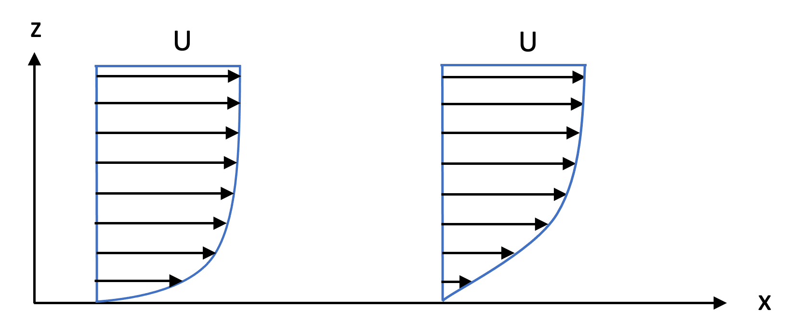
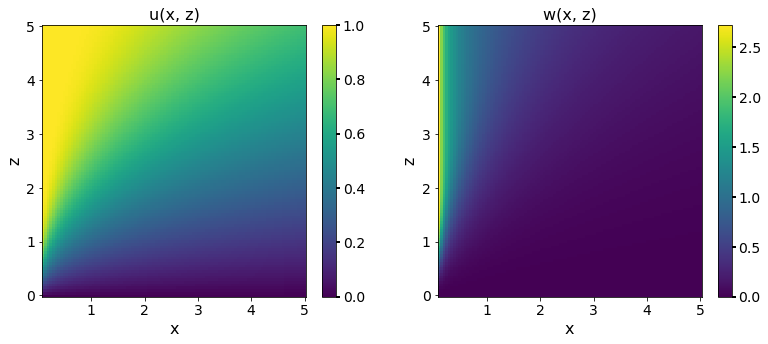

Analysing the boundary layer developing when a uniform flow impinges on a half-plane by approximating the Navier-Stokes equation and divergence-free conditions, and derived a system of equations that can be solved numerically to obtain the velocity components in the boundary layer.

We consider that the boundary layer is formed by a time-independent uniform flow over a half-plane. We assume a uniform flow \(\boldsymbol{u}=(\mathrm{U}, 0,0)\) as \(|\boldsymbol{x}| \rightarrow \infty\) and independence on \(y\). The flow impinges on a thin semi-infinite plate at \(z=0\) with \(x>0\).
We approximated the Navier-Stokes equation and divergence-free conditions by \[ u \partial_x u+w \partial_z u=\partial_{z z} u, \quad \partial_x u+\partial_z w=0, \] where we use scaled (non-dimensional) variables. We showed that the solution for \(x>0\) and \(z>0\) can be found in the form \[ u=f^{\prime}(\eta), \quad w=\frac{1}{2 x^{1 / 2}}\left(\eta f^{\prime}(\eta)-f(\eta)\right), \quad \text { with } \quad \eta=\frac{z}{x^{1/2}}, \] where the function \(f(\eta)\) satisfies the boundary-value problem \[ f^{\prime \prime \prime}+\frac{1}{2} f f^{\prime \prime}=0, \quad \text { with } \quad f(0)=f^{\prime}(0)=0 \quad \text { and } \quad \lim_{\eta \rightarrow \infty} f^{\prime}(\eta)=1. \]
Note that the \(z\) length scale is much shorter than the \(x\) length scale, reflecting the thinness of the boundary layer.
Solutions \(u(x, z)\) and \(w(x, z)\)
We are going to investigate the behaviour of the solutions \(u(x, z)\) and \(v(x, z)\), where \(u\) represents the velocity component in the direction of the flow, and \(w\) represents the velocity component normal to the flow direction. In order to solve for \(u\) and \(w\), we need to first express the third-order ordinary differential equation (ODE) as a system of first-order ODEs to find a numerical solution for \(f(\eta)\), \(f'(\eta)\) and \(f''(\eta)\). We define \(f_1(\eta)=f(\eta)\), \(f_2(\eta)=f'(\eta)\), and \(f_3(\eta)=f''(\eta)\). Then, the system becomes \[ f_1^{\prime} =f_2, \quad f_2^{\prime} =f_3, \quad \text{and} \quad f_3^{\prime} =-\frac{1}{2} f_1 f_3 , \] with the initial conditions \[ f_1(0) = f(0) = 0, \quad f_2(0) = f^{\prime}(0) = 0, \quad \text{and} \quad \lim_{\eta \rightarrow \infty} f_2(\eta) = \lim_{\eta \rightarrow \infty} f^{\prime}(\eta) = 1. \]

We can observe that the velocity profile is characterised by a thin boundary layer close to the wall, where the velocity increases rapidly from zero at the wall to its maximum value at the edge of the boundary layer. Beyond the boundary layer, the velocity approaches the free stream value, which is constant across the entire flow domain.
The flow is assumed to be uniform in the \(x\) direction far from the plate, so \(u\) becomes constant and equal to the free-stream velocity \(\mathrm{U}\). Near the plate at \(z=0\), the velocity component \(w\) is zero due to the no-slip condition. As we move away from the plate in the \(z\) direction, the velocity component \(w\) increases due to the viscous effects of the fluid.
The boundary layer thickness
The (non-dimensional) boundary layer thickness can be defined as \[ \delta(x)=\int_0^{\infty}(1-u(x, z)) \mathrm{d} z. \]
Using the expression for \(u(x,z)\) from (\(\ref{solution_uw}\)) and using the change of variable \(\eta = z/x^{1/2}\), we have \[ \begin{align*} \delta(x) &= \int_0^{\infty} \left(1-f'(\eta)\right) x^{1/2} \mathrm{d}\eta \\ &= \lim_{L\to\infty} x^{1/2} \int_0^{L} \left(1-f'(\eta)\right) \mathrm{d}\eta \\ &= \lim_{L\to\infty} x^{1/2} \left[\eta-f(\eta)\right]_0^{L} \\ &= \lim_{L\to\infty} x^{1/2} \left(L - f(L)\right), \end{align*} \] where we use that \(f(0) = 0\).
We can estimate this by taking a finite but large \(L\) such as \(L = 10\). Therefore we get an estimate for \(\delta(x)\) which is \[ \delta(x) \approx x^{1/2}(10 - f(10)) = x^{1/2}(10 - 8.28) = 1.72x^{1/2}. \] It shows that the boundary layer thickness increases with the distance from the wall. When the distance from the wall is very small, the thickness of the boundary layer becomes negligible.
The formula for the (non-dimensional) viscous stress at the wall can be defined as \[ \sigma(x)=\left.\partial_z u(x, z)\right|_{z=0}. \]
Using the expression for $ u(x, z)=f’()$ and \(\eta = z/x^{1/2}\) from (\(\ref{solution_uw}\)), we can obtain the derivative with respect to \(z\) as \[ \frac{\partial u(x, z)}{\partial z}=\frac{d}{d \eta} f^{\prime}(\eta) \cdot \frac{\partial \eta}{\partial z}=\frac{1}{x^{1 / 2}} f^{\prime \prime}(\eta). \] Evaluating this at \(z=0\) gives \[ \sigma(x)=\left.\partial_z u(x, z)\right|_{z=0}=\frac{1}{x^{1 / 2}} f^{\prime \prime}(0). \]
Since we have numerically computed \(f''(\eta)\) for \(\eta \in (0, 10)\), we obtain a numeric estimate \(f''(0) = 0.332\). Therefore we have \[ \sigma(x)=\frac{0.332}{x^{1 / 2}}. \] This tells us that the viscous stress at the wall decreases as the distance from the wall increases, and it becomes very small for large values of \(x\). This is consistent with the idea that the flow far away from the wall is nearly inviscid, and that the viscous effects are confined to a thin layer near the wall, as described by the boundary layer theory.
Discussion
The numerical estimate for the boundary layer thickness, \(\delta\), shows that the boundary layer grows as the distance from the wall increases, which means that the velocity gradient near the wall decreases, and the flow becomes more uniform in the outer region. For the viscous stress at the wall, \(\sigma\), the estimate illustrates that the stress decreases with increasing distance from the wall, indicating that the flow is less influenced by the wall friction further away from the wall.
However, it is important to keep in mind that these estimates are based on a simplified model, so they may not capture all the details and complexities of the actual flow. Furthermore, the accuracy of the estimates may depend on the choice of the domain size and the numerical method used to solve the boundary value problem. Therefore, it is important to validate these estimates against experimental or to refine the numerical methods and models used.